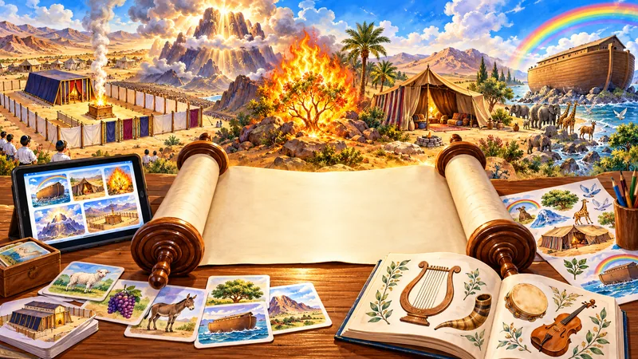

הקול החמישי – מאגר חומרי הלימוד התורני
"קול ששון וקול שמחה, קול חתן וקול כלה, קול אומרים הודו את ה'"
המאגר הגדול של חומרי לימוד על גדולי ישראל לפי סדר הדורות – דף לכל רב עם סיפורים, תולדות וחומרים – ולצדו פרשת השבוע, חומש ונביאים, הלכה, משנה, גמרא, חגים ומועדים. 56,185 חומרי לימוד פתוחים לכולם, בעריכת הרב יהודה טאוב. על המאגר ←
הנושאים

📖פרשת השבוע
משחקים, שירים, מצגות ושיעורים לכל פרשה – מבראשית ועד דברים, מסודרים לפי סדר הפרשיות
294 פריטיםחומש
קטלוג לכל חומש: בראשית, שמות, ויקרא, במדבר ודברים – אלפי דפי עבודה, מצגות, משחקים ומבחנים לפי פרשות
5 פריטיםנביא
קטלוג לכל ספר: יהושע (כיתה ג׳), שופטים (ד׳), שמואל א (ה׳), שמואל ב (ו׳) ומלכים – דפי עבודה, מבחנים ומצגות לפי פרקים
5 פריטיםהלכה
חומרי לימוד בהלכה לבית הספר היסודי לפי נושאים – סדר היום, שבת, כשרות, מצוות התלויות בארץ ובין אדם לחברו
לקטלוג ←משנה
פרקי אבות, תענית, ראש השנה, סוכה וברכות לכיתות א׳–ו׳ – כ-1,800 חומרים לפי מסכת, פרק ומשנה
לקטלוג ←חגים ומועדים
אלול וראש השנה, סוכות, חנוכה, ט"ו בשבט, פסח, ל"ג בעומר, יום ירושלים, שבועות, בית המקדש ועוד
203 פריטיםהודיה ומזמור לתודה
כל נושאי ההודיה במקום אחד – חוברות, שיעורים, עלוני קול תודה, מנגינות למזמור לתודה, דיסקים, מגנטים וקרבן תודה
149 פריטיםכלים למחנך
מפתח לכלים של המורה והמחנך – משמעת בכיתה, קול המורה, בינה מלאכותית ופרומפטים, חומרים לכיתה ואפליקציות
236 פריטיםספרים
כל סדרות הספרים של הרב יהודה טאוב – ספרים, ספרונים ומצגות, עם קישור להזמנה
3 פריטיםמאמרים ונושאים
דף מפתח: כבוד האישה וזוגיות, ארץ ישראל, תפילה, ומאמרים ושיעורים תורניים
674 פריטיםסיפורי תנאים וגדולי ישראל
דף מפתח: קטלוגי המצגות לסיפורי התנאים ולסיפורים החינוכיים, ספרי הסיפורים, גדולי ישראל, ציר הדורות וספר האגדה
13 פריטיםמשחקי לימוד ופעילויות
משחקים אינטראקטיביים, חידונים ומצגות לילדים – לחגים, לאהבת ה' ולשמחה
169 פריטיםקטלוגים
קטלוגים ומפתחות לכל החומרים – לימוד תורה, בית הספר והמורה
46 פריטיםאודות וצור קשר
פרטי קשר
2 פריטים